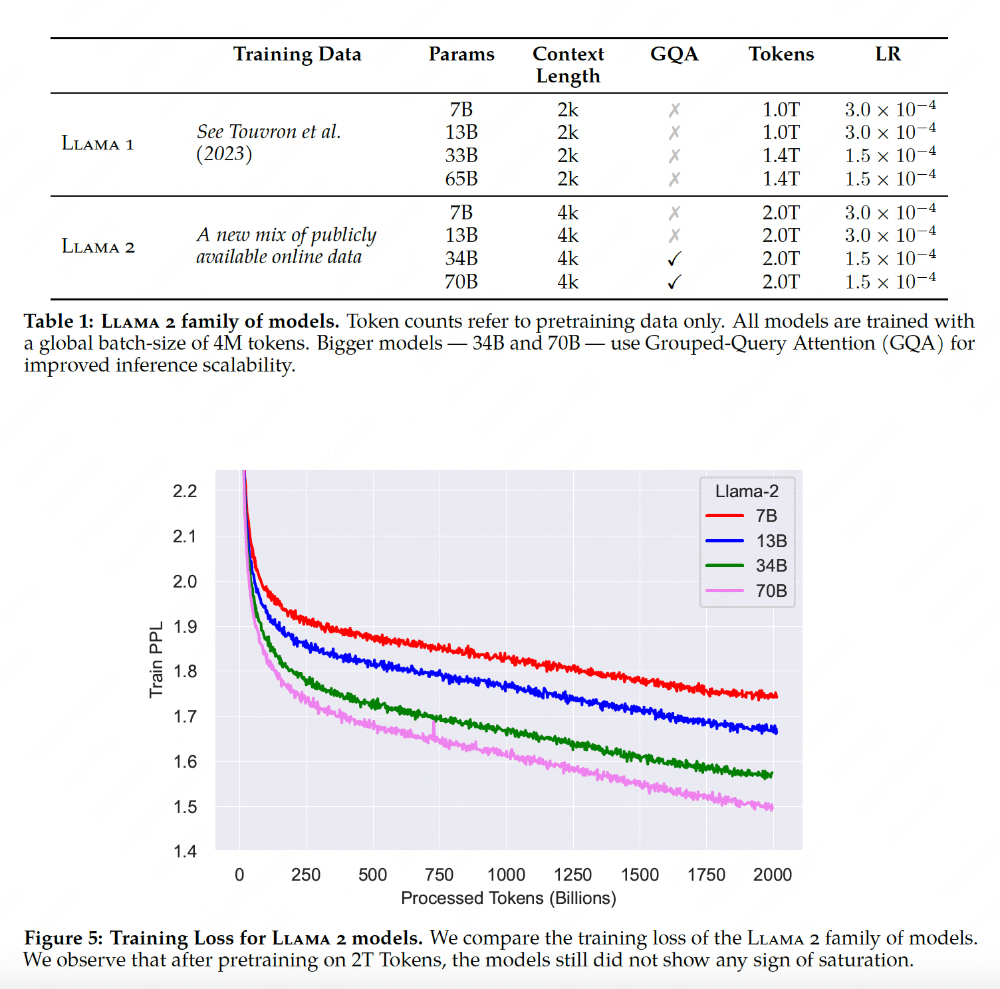
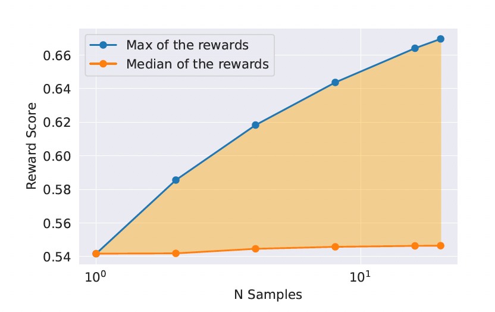

Llama 2#
Note
Llama 2 is a collection of pretrained and fine-tuned LLMs ranging from 7b to 70b parameters. The fine-tuned LLMs, called Llama2-chat, are optimized for dialogue use cases.
Pretrain#

SFT#
Llama 2-Chat is the result of several months of research and iterative applications of alignment techniques, including both instruction tuning and RLHF, requiring significant computational and annotation resources.
Quality Is All You Need. A limited set of clean instruction-tuning data can be sufficient to reach a high level of quality. We found that SFT annotations in the order of tens of thousands was enough to achieve a high-quality result. We stopped annotating SFT after collecting a total of 27,540 annotations.
Caution
To ensure the model sequence length is properly filled, we concatenate all the prompts and answers from the training set. A special token is utilized to separate the prompt and answer segments. We utilize an autoregressive objective and zero-out the loss on tokens from the user prompt, so as a result, we backpropagate only on answer tokens. Finally, we fine-tune the model for 2 epochs.
RLHF#
Human Preference Data Collection#
We ask annotators to first write a prompt, then choose between two sampled model responses, based on provided criteria. we also ask annotators to label the degree to which they prefer their chosen response over the alternative: either their choice is significantly better, better, slightly better, or negligibly better/ unsure.
As we collected more preference data, our reward models improved, and we were able to train progressively better versions for Llama 2-Chat. It is important before a new Llama 2-Chat tuning iteration to gather new preference data using the latest Llama 2-Chat iterations. This step helps keep the reward model on-distribution and maintain an accurate reward for the latest model.
Reward Modeling#
We train two separate reward models, one optimized for helpfulness (referred to as Helpfulness RM) and another for safety. We initialize our reward models from pretrained chat model checkpoints, as it ensures that both models benefit from knowledge acquired in pretraining.
Training Objectives. To train the reward model, we use the collected pairwise human preference data and a binary ranking loss:
where \(r_{\theta}(x, y)\) is a scalar score output for prompt \(x\) and completion \(y\) with model weight \(\theta\). \(y_{c}\) is the preferred response and \(y_{r}\) is the rejected counterpart.
Built on top of this binary ranking loss, given that our preference ratings is decomposed as a scale of four points (e.g., significantly better), it can be useful to leverage this information to explicitly teach the reward model to assign more discrepant scores to the generations that have more differences. To do so, we further add a margin component in the loss:
where the margin \(m(r)\) is a discrete function of the preference rating.
Iterative Fine-Tuning#
As we received more batches of human preference data annotation, we were able to train better reward models and collect more prompts. We therefore trained successive versions for RLHF models, referred to here as RLHF-V1, … , RLHF-V5.
We explored RLHF fine-tuning with two main algorithms:
Rejection Sampling fine-tuning (RS). At each iterative stage, we sample K answers for each prompt from the most recent model. We score each sample given the best reward model accessible at the time of the experiment, and then select the best answer for a given prompt.
In earlier versions of our model, up to RLHF V3, our approach was to confine answer selection solely to the “bag” of samples gathered from the preceding iteration. For example, RLHF V3 was trained using only samples from RLHF V2. However, this method led to a regression in some capabilities. In response, on subsequent iterations, we modified our strategy, incorporating top-performing samples from all prior iterations, such as those used in RLHF-V1 and RLHF-V2.
We illustrate the benefit of Rejection Sampling in Figure 7. The delta between the maximum and median curves can be interpreted as the potential gain of fine-tuning on the best output.

We perform rejection sampling only with our largest 70B Llama 2-Chat. All smaller models are fine-tuned on rejection sampled data from the larger model, thus distilling the large-model capabilities into the smaller ones.
PPO. We further train our language model following the RL scheme which uses the reward model as an estimate for the true reward function (human preference) and the pretrained language model as the policy to optimize. During this phase, we seek to optimize the following objective:
We iteratively improve the policy by sampling prompts \(p\) from our dataset \(\mathcal{D}\) and generations \(g\) from the policy \(\pi\) and use the PPO algorithm and loss function to achieve this objective.
The final reward function we use during optimization:
contains a penalty term for diverging from the original policy \(\pi_{0}\). We find this constraint is useful for training stability, and to reduce reward hacking whereby we would achieve high scores from the reward model but low scores from human evaluation.
We define \(R_{c}\) to be a piecewise combination of the safety \((R_{s})\) and helpfulness \((R_h)\) reward models. We also find it important to whiten (to transform input data so that it has zero mean and unit variance) the final linear scores: